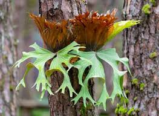

Info Tanaman Banyumanik

Paku Tanduk Rusa
Kingdom: Plantae
Divisi: Tracheophyta
Class: Polypodiopsida
Ordo: Polypodiales
Famili: Polypodiaceae
Genus: Platycerium
Spesies: Platycerium bifurcatum
🌱 Budidaya
- Lingkungan: Cocok tumbuh di tempat teduh, lembap, dan tidak terkena sinar matahari langsung. Dapat ditempel pada pohon, papan kayu, atau digantung dalam pot.
- Penanaman: Gunakan media seperti sabut kelapa, pakis kering, atau papan kayu yang mampu menjaga kelembapan tanpa membuat media terlalu basah.
- Perawatan: Perbanyakan dilakukan melalui anakan yang tumbuh di samping induknya. Pisahkan saat ukuran cukup besar dan telah memiliki akar sendiri.
💡 Fun Fact
"Tameng & Tanduk dari Alam" — Tanduk rusa memiliki dua jenis daun: daun steril berbentuk seperti perisai yang menempel pada media, dan daun fertil menjuntai indah menyerupai tanduk rusa.
🍃 Manfaat
- Menambah keindahan ruangan dan taman karena bentuk daunnya yang unik dan menjuntai.
- Dapat membantu menyaring polutan ringan di udara, sehingga meningkatkan kualitas udara sekitar.
- Mengandung senyawa antiinflamasi yang secara tradisional dipercaya dapat meredakan demam dan menyembuhkan bisul.